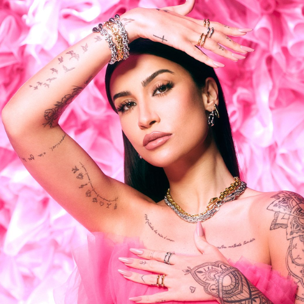
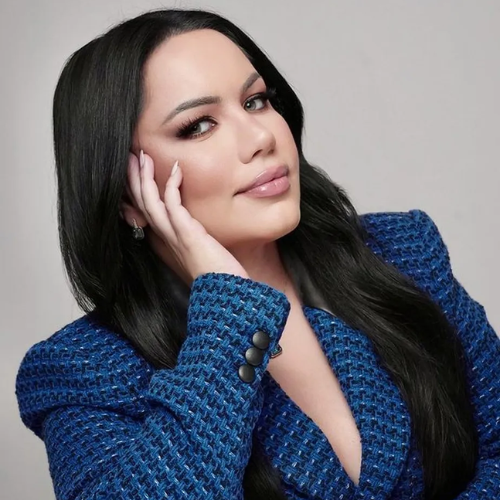
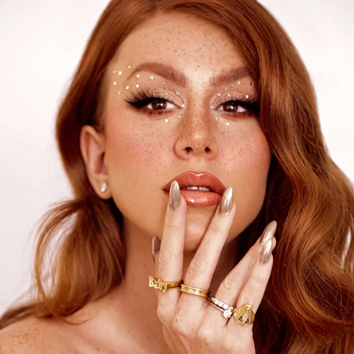

Go By The Look

Em outubro do ano de 2018, Bianca Andrade inaugurou sua própria coleção de maquiagens com a marca de cosméticos Payot, conhecida como Boca Rosa Beauty by Payot.
Já no ano de 2019, ou seja 3 anos atrás, Bianca Andrade da Silva também lançou sua linha de produtos para cabelo, a então chamada linha Boca Rosa Hair, em uma collab com a Cadiveu, uma marca renomada de produtos para cabelos.
Os produtos Boca Rosa Beauty by Payout são conhecidos pela sua qualidade e preço bom, a preocupação de Bianca Andrade sempre foi essa, de entregar produtos de boa qualidade, eficiência e de baixo custo para todas e todos seus seguidores.
Vale destacar aqui , que só no ano de 2020, a Marca Boca Rosa faturou milhões de reais caros leitores, para ser mais exata com vocês mais de 120 milhões de reais.
Já no ano de 2019, ou seja 3 anos atrás, Bianca Andrade da Silva também lançou sua linha de produtos para cabelo, a então chamada linha Boca Rosa Hair, em uma collab com a Cadiveu, uma marca renomada de produtos para cabelos.
Os produtos Boca Rosa Beauty by Payout são conhecidos pela sua qualidade e preço bom, a preocupação de Bianca Andrade sempre foi essa, de entregar produtos de boa qualidade, eficiência e de baixo custo para todas e todos seus seguidores.
Vale destacar aqui , que só no ano de 2020, a Marca Boca Rosa faturou milhões de reais caros leitores, para ser mais exata com vocês mais de 120 milhões de reais.

A Linha Bruna Tavares nasceu com o propósito de igualar o mercado nacional ao mercado internacional, entregando maquiagens de alta qualidade customizadas para o público brasileiro.
Nossa missão para além da maquiagem é tornar esse momento uma experiência especial que celebra o amor próprio e o momento mágico de pausar para se olhar, se contemplar e se cuidar.
Desenvolvemos fórmulas, texturas e cores pensando em atender cada particularidade e necessidade do nosso público. Em BT você vai se encontrar pois um dos nossos principais pilares é a diversidade e a inclusão.
Buscamos sempre inovar para trazer para o mercado produtos que facilitem a rotina de beleza e que cuidem além de maquiar, e produtos sempre alinhados com as principais tendências globais.
Nossa missão para além da maquiagem é tornar esse momento uma experiência especial que celebra o amor próprio e o momento mágico de pausar para se olhar, se contemplar e se cuidar.
Desenvolvemos fórmulas, texturas e cores pensando em atender cada particularidade e necessidade do nosso público. Em BT você vai se encontrar pois um dos nossos principais pilares é a diversidade e a inclusão.
Buscamos sempre inovar para trazer para o mercado produtos que facilitem a rotina de beleza e que cuidem além de maquiar, e produtos sempre alinhados com as principais tendências globais.

Sempre antenada no que o seu público quer e nos caminhos que o mercado toma, Mari afirmou que tudo que é produzido pela sua linha é pensado para agregar o consumidor da marca.
"Estamos sempre atentos aos desejos e tendências do cenário de beleza nacional e internacional, assim conseguimos identificar a necessidade do público e, principalmente, o que faz mais sentido com a história que estamos construindo desde o início da Mari Maria Makeup", explicou Mari.
Além disso, a empresária também afirmou que participa de todo o processo da criação, seja de um produto específico ou de uma coleção. Tudo passa pelo crivo da influenciadora e dona da marca.
"Eu participo de tudo, desde a ideia inicial ao desenvolvimento da formulação e performance. Para mim o mais importante é a segurança da fórmula e a entrega do produto, então as fórmulas em mim inúmeras vezes e comparo com os melhores. Só lanço aquilo que acredito", enfatizou.
"Estamos sempre atentos aos desejos e tendências do cenário de beleza nacional e internacional, assim conseguimos identificar a necessidade do público e, principalmente, o que faz mais sentido com a história que estamos construindo desde o início da Mari Maria Makeup", explicou Mari.
Além disso, a empresária também afirmou que participa de todo o processo da criação, seja de um produto específico ou de uma coleção. Tudo passa pelo crivo da influenciadora e dona da marca.
"Eu participo de tudo, desde a ideia inicial ao desenvolvimento da formulação e performance. Para mim o mais importante é a segurança da fórmula e a entrega do produto, então as fórmulas em mim inúmeras vezes e comparo com os melhores. Só lanço aquilo que acredito", enfatizou.
 (44) 99734-1655
(44) 99734-1655
 @dressa_mc
@dressa_mc